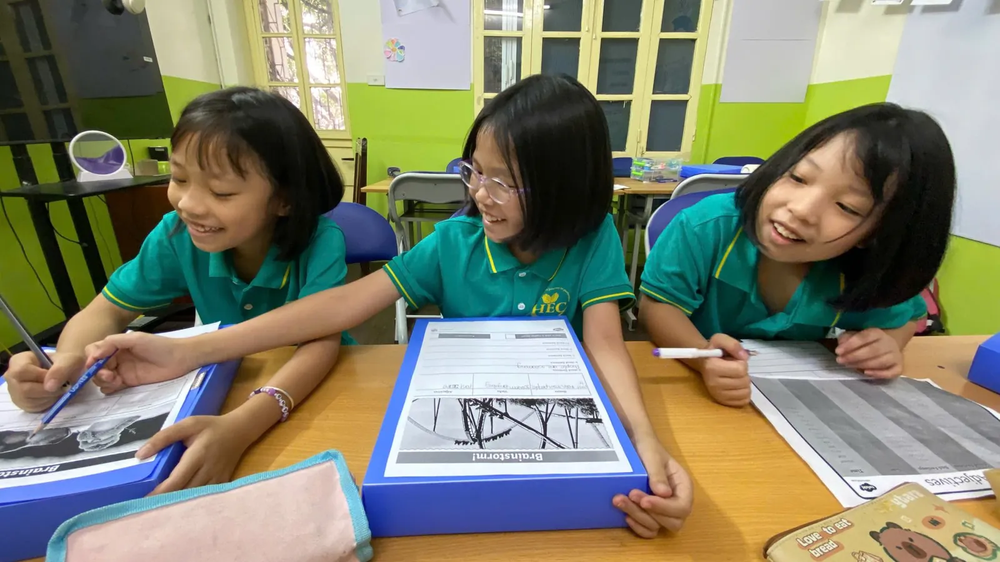

ELA là gì? ELA khác ESL thế nào và vì sao con nên học tiếng Anh theo ELA
Học sinh Mỹ không “học tiếng Anh” — các em học Ngữ văn tiếng Anh: đọc trọn tác phẩm, viết có lập luận, thảo luận và thuyết trình. Bài viết giải thích ELA bằng ngôn ngữ dễ hiểu, kèm bằng chứng nghiên cứu và cách áp dụng cho trẻ Việt Nam.

- ELA (English Language Arts) là môn Ngữ văn tiếng Anh trong trường học Mỹ: đọc, viết, nói – nghe và ngôn ngữ, thường theo chuẩn Common Core.
- ESL (English as a Second Language) dạy tiếng Anh như một ngoại ngữ: từ vựng, ngữ pháp, mẫu câu giao tiếp theo chủ đề.
- Khác biệt cốt lõi: ESL dạy con về tiếng Anh; ELA dạy con dùng tiếng Anh để đọc hiểu, suy nghĩ và trình bày.
- Nghiên cứu ủng hộ việc dùng ngôn ngữ hơn học thuộc: viết về bài đọc giúp hiểu sâu hơn, dùng từ mới để viết giúp nhớ lâu hơn, học tiếng Anh qua nội dung hiệu quả hơn lớp tiếng Anh thông thường.
- HEC dạy theo cách tiếp cận ELA bám chuẩn Common Core, theo các cấp độ Cambridge và khung CEFR; tối đa 12 học sinh/lớp; 210.000₫/buổi 90 phút.
Nội dung bài viết
- ELA là gì?
- ESL là gì?
- ELA và ESL khác nhau thế nào?
- 7 bằng chứng: vì sao dùng tiếng Anh hiệu quả hơn học thuộc
- ELA có phù hợp với trẻ Việt Nam?
- ELA và các kỳ thi: Cambridge, thi vào lớp 6, IELTS
- 6 câu hỏi để nhận biết một lớp ELA thật
- Học ELA tại HEC: lộ trình từ 4 tuổi đến lớp 12
- Câu hỏi thường gặp
ELA là gì?
ELA là viết tắt của English Language Arts — môn Ngữ văn tiếng Anh mà học sinh Mỹ học từ mẫu giáo đến lớp 12, tương tự môn Ngữ văn (Tiếng Việt) của học sinh Việt Nam. Phần lớn các bang ở Mỹ dạy ELA theo bộ chuẩn Common Core State Standards hoặc chuẩn riêng được xây dựng trên cùng tinh thần. Chuẩn ELA chia thành bốn mạch:
- Đọc (Reading): đọc văn học (truyện, thơ, kịch) và văn bản thông tin (khoa học, lịch sử, xã hội). Ở tiểu học có thêm kỹ năng đọc nền tảng như đánh vần ghép âm (phonics) và đọc trôi chảy.
- Viết (Writing): ba thể loại chính — nêu ý kiến/nghị luận, thông tin – giải thích và kể chuyện — cùng kỹ năng tìm hiểu tài liệu và dẫn chứng.
- Nói và nghe (Speaking & Listening): thảo luận nhóm, đặt câu hỏi, trình bày và phản biện có dẫn chứng.
- Ngôn ngữ (Language): ngữ pháp, chính tả và từ vựng — được học trong ngữ cảnh của bài đọc và bài viết, không tách rời.
Nói gọn, ELA không coi tiếng Anh là một môn để học thuộc, mà là công cụ để đọc hiểu, suy nghĩ và giao tiếp.
Ở một số khu học chánh tại Mỹ, “ELA” còn được dùng cho English Language Acquisition — chương trình hỗ trợ học sinh đang học tiếng Anh. Trong bài này và tại HEC, ELA luôn có nghĩa là English Language Arts.
ESL là gì?
ESL (English as a Second Language) là cách dạy tiếng Anh cho người học có tiếng mẹ đẻ khác. Ở Việt Nam, đây (chính xác hơn là EFL — tiếng Anh như ngoại ngữ) là mô hình của phần lớn các lớp tiếng Anh: học theo chủ đề như gia đình, trường học, sở thích; mỗi bài một danh sách từ vựng, một cấu trúc ngữ pháp và vài mẫu câu hội thoại.
ESL có chỗ đứng của nó: với người mới bắt đầu, làm quen với âm, chữ và các mẫu câu cơ bản là cần thiết. Vấn đề là rất nhiều lớp dừng lại ở đó. Con thuộc từ, làm đúng bài tập ngữ pháp, nói được “giao tiếp” — nhưng khi phải đọc một bài dài, viết một đoạn văn có ý kiến riêng hay trình bày trước lớp thì lúng túng.
ELA và ESL khác nhau thế nào?
| Tiêu chí | ESL (tiếng Anh như ngoại ngữ) | ELA (Ngữ văn tiếng Anh) |
|---|---|---|
| Mục tiêu | Giao tiếp hằng ngày; thuộc từ và cấu trúc | Dùng tiếng Anh để đọc hiểu, tư duy, viết và trình bày |
| Nội dung | Bài học theo chủ đề, hội thoại mẫu | Truyện, văn bản khoa học – xã hội, tác phẩm trọn vẹn |
| Từ vựng | Danh sách từ theo bài, học thuộc | Học trong ngữ cảnh bài đọc, dùng lại khi nói và viết |
| Ngữ pháp | Học quy tắc, làm bài tập điền | Học để viết và nói chính xác hơn; sửa ngay trên bài của con |
| Viết | Câu đơn lẻ, điền vào chỗ trống | Đoạn văn, bài văn nhiều đoạn theo thể loại |
| Nói | Lặp lại mẫu câu | Thảo luận, tranh biện, thuyết trình có dẫn chứng |
| Đánh giá | Bài kiểm tra từ vựng – ngữ pháp | Tiêu chí chấm (rubric) cho bài viết, bài nói, dự án |
| Chuẩn tham chiếu | Tùy giáo trình | Common Core ELA (Mỹ) |
← Vuốt ngang để xem đủ bảng →
Bảng mô tả hai mô hình điển hình; nhiều lớp thực tế kết hợp cả hai ở mức độ khác nhau.
Một ví dụ: cùng chủ đề “động vật”, hai cách dạy
Học 10 từ mới (camel, desert, survive…), luyện mẫu câu “What's this? It's a camel.”, làm bài tập nối từ và điền vào chỗ trống. Về nhà chép từ.
Đọc một bài khoa học về cách loài vật thích nghi, thảo luận “Vì sao lạc đà sống được ở sa mạc?”, viết đoạn văn giải thích có câu chủ đề và hai dẫn chứng từ bài đọc, rồi trình bày cho cả lớp.
Cả hai lớp đều học các từ camel, desert, survive. Nhưng chỉ ở lớp thứ hai, con phải dùng những từ đó để suy nghĩ, giải thích và thuyết phục người khác — và đó chính là điều tạo ra khác biệt.
7 bằng chứng: vì sao dùng tiếng Anh hiệu quả hơn học thuộc
Cách tiếp cận ELA không chỉ là “phong cách dạy”. Nó dựa trên những kết quả nghiên cứu được kiểm chứng nhiều lần về cách con người học ngôn ngữ.
1. Giao tiếp trôi chảy chưa phải là tiếng Anh học thuật
Nhà ngôn ngữ học Jim Cummins phân biệt hai loại năng lực: BICS — kỹ năng giao tiếp hằng ngày, và CALP — năng lực ngôn ngữ học thuật. Theo khung lý thuyết của ông, người học ngôn ngữ thứ hai thường đạt khả năng giao tiếp hằng ngày sau khoảng 1–2 năm, nhưng cần 5–7 năm để đạt tiếng Anh học thuật ngang bạn bản ngữ. Một đứa trẻ nói chuyện tự nhiên bằng tiếng Anh vẫn có thể gặp khó khi đọc một bài khoa học hay viết một đoạn nghị luận — vì đó là hai năng lực khác nhau. ELA xây dựng năng lực thứ hai ngay từ đầu.
2. Gặp một từ 10 lần vẫn chưa chắc dùng được
Trong nghiên cứu của Stuart Webb (2007) với 121 người học tiếng Anh ở Nhật Bản, người học gặp từ mới 1, 3, 7 hoặc 10 lần trong ngữ cảnh. Càng gặp nhiều lần, hiểu biết về từ càng tăng — nhưng kể cả sau 10 lần, khả năng nhận ra từ vẫn cao hơn rõ rệt so với khả năng tự dùng từ đó. Nhìn và học thuộc giúp con nhận ra từ; muốn dùng được, con phải nói và viết bằng chính từ đó.
3. Dùng từ mới để viết giúp nhớ lâu hơn
Hulstijn và Laufer (2001) so sánh các nhiệm vụ học từ có mức độ “tham gia” khác nhau: đọc bài có chú giải nghĩa, đọc rồi điền từ, và viết một bài ngắn có dùng các từ mới. Theo giả thuyết “mức độ tham gia” (Involvement Load Hypothesis) mà họ kiểm chứng, nhiệm vụ buộc người học phải cần từ, tìm nghĩa và cân nhắc cách dùng — như khi tự viết — giúp ghi nhớ tốt hơn so với chỉ đọc lướt nghĩa. Đây là lý do lớp ELA luôn kết thúc bằng sản phẩm của con: một đoạn văn, một bài nói, một dự án.
4. Viết về điều đã đọc giúp đọc hiểu tốt hơn
Báo cáo Writing to Read của Steve Graham và Michael Hebert (Quỹ Carnegie, 2010) tổng hợp các nghiên cứu thực nghiệm từ lớp 1 đến lớp 12 và kết luận: cho học sinh viết về văn bản đã đọc (tóm tắt, ghi chú, trả lời và tự đặt câu hỏi, viết bài phản hồi) giúp các em hiểu văn bản tốt hơn; dạy kỹ năng viết cũng cải thiện đọc hiểu và đọc trôi chảy. Trong ELA, đọc và viết luôn đi cùng nhau.
5. Đọc thật nhiều truyện: tiến bộ nhanh gấp đôi
Nghiên cứu “Book Flood” của Warwick Elley và Francis Mangubhai (1983) tại Fiji theo dõi 380 học sinh lớp 4–5 học tiếng Anh như ngôn ngữ thứ hai trong khoảng tám tháng rưỡi. Những lớp được “ngập” trong truyện tranh minh họa — đọc nhiều, nghe giáo viên đọc to và cùng chia sẻ câu chuyện — tiến bộ về đọc hiểu và nghe hiểu nhanh khoảng gấp đôi tốc độ thông thường, và lợi thế còn tiếp tục tăng ở các lần đánh giá sau. ELA đặt việc đọc văn bản thật vào trung tâm.
6. Học tiếng Anh qua nội dung vượt trội lớp tiếng Anh thông thường
Phân tích tổng hợp của Lee, Lee và Lo (2023) gộp 38 nghiên cứu với 7.434 học sinh trung học học tiếng Anh qua nội dung môn học (mô hình CLIL/EMI) so với lớp tiếng Anh thông thường. Nhóm học qua nội dung đạt năng lực tiếng Anh cao hơn rõ rệt: hệ số hiệu quả d = 0,73 trong ngắn hạn và d = 1,01 trong dài hạn — tức chênh lệch từ trung bình – lớn đến lớn theo thang đo thống kê thông dụng. Lớp ELA, nơi con học tiếng Anh qua văn học, khoa học và xã hội, vận hành theo đúng nguyên lý này.
7. Cho con nói nhiều hơn: thêm khoảng 6 tháng tiến bộ
Bộ công cụ Teaching and Learning Toolkit của Quỹ Education Endowment Foundation (Anh) xếp các hoạt động phát triển ngôn ngữ nói — thảo luận, đối thoại có hướng dẫn, trình bày — ở mức khoảng +6 tháng tiến bộ thêm mỗi năm với chi phí rất thấp. Đáng chú ý, các buổi do trợ giảng được đào tạo dẫn dắt cho hiệu quả tương đương buổi do giáo viên dẫn dắt. Đó là lý do lớp học tại HEC có trợ giảng đi cùng giáo viên: nhiều nhóm nhỏ được nói và được sửa cùng lúc.
| Nghiên cứu | Phát hiện chính | Ý nghĩa cho lớp học |
|---|---|---|
| Cummins (BICS/CALP) | Giao tiếp: 1–2 năm; học thuật: 5–7 năm | Đừng dừng ở “nói được”; xây tiếng Anh học thuật sớm |
| Webb (2007) | 10 lần gặp từ vẫn chưa đủ để tự dùng | Từ mới phải được nói và viết, không chỉ học thuộc |
| Hulstijn & Laufer (2001) | Nhiệm vụ “tham gia” nhiều giúp nhớ từ lâu hơn | Mỗi bài học kết thúc bằng sản phẩm của con |
| Graham & Hebert (2010) | Viết về bài đọc giúp đọc hiểu tốt hơn | Đọc và viết luôn đi cùng nhau |
| Elley & Mangubhai (1983) | Đọc nhiều truyện: tiến bộ nhanh khoảng gấp đôi | Văn bản thật, đọc thật nhiều |
| Lee, Lee & Lo (2023) | Học qua nội dung: d = 0,73 → 1,01 | Học tiếng Anh qua văn học, khoa học, xã hội |
| EEF Toolkit | Phát triển ngôn ngữ nói: khoảng +6 tháng | Lớp nhỏ, có trợ giảng, con được nói nhiều |
← Vuốt ngang để xem đủ bảng →
- Con cần đọc văn bản thật — truyện, bài khoa học — chứ không chỉ đoạn hội thoại mẫu.
- Con cần nói và viết bằng từ mới, không chỉ chép và học thuộc danh sách từ.
- Con cần được sửa trên chính sản phẩm của mình — điều chỉ làm được khi lớp đủ nhỏ.
ELA có phù hợp với trẻ Việt Nam?
ELA vốn được thiết kế cho học sinh Mỹ, nhưng có những chương trình được xây dựng riêng để đưa học sinh đang học tiếng Anh đến với văn bản đúng khối lớp. Ví dụ, National Geographic Reach Higher — giáo trình lớp Jupiter tại HEC — là chương trình tiểu học sáu cấp độ, kết hợp truyện được viết riêng với nội dung khoa học và xã hội của National Geographic, phát triển cả từ vựng, phonics, đọc, viết và nói theo hướng tiếng Anh học thuật. Nhóm tác giả gồm các nhà nghiên cứu về giáo dục học sinh song ngữ như GS. Nonie K. Lesaux (Đại học Harvard) và TS. Deborah J. Short, đồng tác giả mô hình giảng dạy SIOP.
Bối cảnh chính sách cũng đang đi theo hướng này. Theo Quyết định 2371/QĐ-TTg (27/10/2025), Việt Nam đặt mục tiêu đưa tiếng Anh thành ngôn ngữ thứ hai trong trường học. Ngôn ngữ thứ hai nghĩa là ngôn ngữ để học, không chỉ để chào hỏi — và đó chính là điều ELA rèn luyện.
Ba điều kiện để ELA hiệu quả với trẻ Việt Nam:
- Xếp lớp theo trình độ, không theo tuổi. Trẻ mới bắt đầu vẫn học âm – chữ và mẫu câu cơ bản, nhưng qua đọc to, kể chuyện và viết câu thay vì chỉ học thuộc.
- Sĩ số nhỏ. ELA đòi hỏi giáo viên đọc và sửa từng bài viết, nghe từng bài nói. Lớp 25 học sinh không thể làm điều đó mỗi buổi.
- Có người hỗ trợ bằng tiếng Việt khi cần. Trợ giảng người Việt giúp con hiểu nhiệm vụ và yêu cầu khó, để thời gian trên lớp dành cho việc dùng tiếng Anh.
ELA và các kỳ thi: Cambridge, thi vào lớp 6, IELTS
ELA không phải là luyện đề. Nhưng những gì ELA rèn luyện — đọc hiểu văn bản dài, viết đoạn văn có ý, nói có lập luận — chính là những gì các bài thi chấm điểm.
- Chứng chỉ Cambridge: Pre A1 Starters, A1 Movers, A2 Flyers, A2 Key (KET) và B1 Preliminary (PET) tương ứng các bậc Pre A1 – B1 của khung tham chiếu châu Âu CEFR. Các lớp tại HEC bám theo những cấp độ này.
- Thi vào lớp 6 ở Hà Nội: năm học 2026–2027, Trường THCS Cầu Giấy xét tuyển bằng tổng điểm ba bài đánh giá năng lực Toán, Tiếng Việt và Tiếng Anh; hơn 5.500 thí sinh dự thi cho 440 chỉ tiêu (tỉ lệ khoảng 1/12,5). Các trường THCS chất lượng cao khác như Thanh Xuân, Nam Từ Liêm cũng dùng bài đánh giá năng lực. Lớp SKY 1 chuẩn bị cho học sinh lớp 5 phần Tiếng Anh của những bài đánh giá này.
- IELTS: Reading học thuật, Writing Task 2 (nghị luận) và Speaking Part 2–3 (trình bày, lập luận) chính là kỹ năng ELA ở cấp độ cao hơn. Xem thêm bài Học IELTS ở Đống Đa.
- Các cuộc thi tiếng Anh: học sinh giỏi, IOE, Olympic tiếng Anh… đều cần vốn ngôn ngữ vững và tốc độ đọc hiểu — hai thứ được rèn đều đặn trong lớp ELA.
6 câu hỏi để nhận biết một lớp ELA thật
“ELA”, “chương trình Mỹ”, “tiếng Anh học thuật” là những cụm từ ai cũng có thể dùng. Hãy hỏi trung tâm sáu câu dưới đây — và yêu cầu được xem bằng chứng.
- Con có đọc trọn một câu chuyện hoặc văn bản dài mỗi tuần, hay chỉ đoạn hội thoại ngắn?
- Con có viết đoạn văn, bài văn theo thể loại (kể chuyện, giải thích, nêu ý kiến) không?
- Từ mới có được dùng lại khi nói và viết, hay chỉ chép và học thuộc?
- Con có thảo luận, tranh biện, thuyết trình thường xuyên không?
- Chương trình có chuẩn tham chiếu rõ ràng (Common Core, CEFR, Cambridge) và tiêu chí chấm bài cụ thể không?
- Sĩ số có đủ nhỏ để giáo viên sửa bài viết của từng em mỗi tuần không?
HEC trả lời “có” cho cả sáu câu — và mời phụ huynh dự giờ để tự kiểm chứng.
Học ELA tại HEC: lộ trình từ 4 tuổi đến lớp 12
Happy English Club (HEC) tại số 25, ngõ 242 Láng, Đống Đa là trung tâm dạy tiếng Anh theo cách tiếp cận ELA. Con được xếp lớp theo trình độ bằng bài kiểm tra đầu vào miễn phí, và mỗi cấp độ có tiêu chí hoàn thành đo được:
- Mars · mầm non · National Geographic Look Starter
Nền tảng ELA: âm – chữ, đọc to, kể lại câu chuyện; đánh vần từ ba âm chính xác từ 90%. - Venus · National Geographic Look 1
Đọc 70–90 từ/phút với độ chính xác từ 95%; viết đoạn văn 4–6 câu. - Neptune · National Geographic Look 2
Viết đoạn văn có câu mở và câu kết; trả lời câu hỏi who/what/why có dẫn chứng. - Jupiter · lớp 3–4, học sinh giỏi · National Geographic Reach Higher
ELA đúng nghĩa: đọc văn học và văn bản khoa học, viết đoạn 8–10 câu, thuyết trình 2 phút. - SKY 1 · lớp 5–6, học sinh giỏi · Oxford Discover
Tóm tắt, viết báo cáo nhiều đoạn, thuyết trình 3 phút; chuẩn bị thi vào lớp 6, KET/PET. - Sanrio Grade 6 · Grammar & Writing G6
Viết 2–3 đoạn (180–220 từ) có luận điểm và dẫn chứng. - Sun · IELTS
Tiếng Anh học thuật cho THCS – THPT; mục tiêu band 5.5–7.0.
Ngoài ra, lớp Mercury dạy Toán Cambridge bằng tiếng Anh — học ngôn ngữ qua nội dung đúng như nghiên cứu ở phần trên.
- Trung tâm được Sở GD&ĐT Hà Nội cấp phép hoạt động.
- Chương trình bám chuẩn Common Core ELA (Mỹ), theo các cấp độ Cambridge English; giáo trình Oxford và National Geographic đối chiếu khung CEFR.
- Giáo viên tốt nghiệp tại Mỹ, có bằng sư phạm và chứng chỉ giảng dạy do bang New Jersey (Hoa Kỳ) cấp.
- Đội ngũ trợ giảng người nước ngoài và người Việt, tốt nghiệp chuyên ngành tiếng Anh hoặc sư phạm.
- Tối đa 12 học sinh/lớp; báo cáo tiến bộ hằng tháng; phụ huynh được mời dự giờ.
- Học phí 210.000₫/buổi 90 phút, thu theo số buổi thực học; CLB đọc sách miễn phí chiều thứ Bảy.
Xem một buổi học ELA thật: học sinh lớp 4 tranh biện
Không phải màn trình diễn tập trước — chỉ là một buổi học bình thường. Các con nêu quan điểm, lắng nghe phía bên kia và phản biện lại hoàn toàn bằng tiếng Anh: mạch “Nói và nghe” của ELA trong thực tế.
Kiểm tra xếp lớp ELA miễn phí cho con
Bài kiểm tra ngắn, một buổi học thử, và lời khuyên thẳng thắn về cấp độ phù hợp — kể cả khi câu trả lời là con cần củng cố nền tảng trước.
Nhắn Zalo 0975 679 889 Gọi ngayCâu hỏi thường gặp
ELA là gì?
ELA là viết tắt của English Language Arts — môn Ngữ văn tiếng Anh mà học sinh Mỹ học từ mẫu giáo đến lớp 12. ELA gồm bốn mạch: đọc (văn học và văn bản thông tin), viết (kể chuyện, giải thích, nêu ý kiến), nói và nghe, và ngôn ngữ (ngữ pháp, từ vựng học trong ngữ cảnh), thường theo bộ chuẩn Common Core.
ELA và ESL khác nhau thế nào?
ESL dạy tiếng Anh như một ngoại ngữ: từ vựng, ngữ pháp và mẫu câu giao tiếp theo chủ đề. ELA dạy học sinh dùng tiếng Anh để đọc hiểu văn bản thật, viết đoạn văn và bài văn theo thể loại, thảo luận và thuyết trình có dẫn chứng. Nói gọn: ESL dạy con về tiếng Anh, ELA dạy con dùng tiếng Anh để học và tư duy.
Con chưa giỏi tiếng Anh có học ELA được không?
Được, nếu lớp được xếp theo trình độ. Tại HEC, trẻ mới bắt đầu học các lớp nền tảng (Mars, Venus, Neptune) với âm – chữ, đọc to và kể chuyện theo cách tiếp cận ELA; các lớp Jupiter (lớp 3–4) và SKY 1 (lớp 5–6) dành cho học sinh đã có trình độ tiếng Anh tốt và muốn được thử thách hơn.
Học ELA có giúp con thi Cambridge, thi vào lớp 6 và IELTS không?
Có. ELA không phải là luyện đề, nhưng đọc hiểu văn bản dài, viết đoạn văn có ý và nói có lập luận chính là những kỹ năng các bài thi Cambridge (Flyers, KET, PET), bài đánh giá năng lực vào lớp 6 có môn Tiếng Anh và IELTS chấm điểm. Ở HEC, lớp SKY 1 kết hợp ELA với chuẩn bị cho các kỳ thi này.
Common Core là gì?
Common Core State Standards là bộ chuẩn chung của Mỹ cho môn Toán và môn Ngữ văn tiếng Anh (ELA), quy định học sinh mỗi khối lớp cần đọc, viết, nói – nghe và dùng ngôn ngữ đến mức nào. Nhiều bang tại Mỹ áp dụng bộ chuẩn này hoặc dùng làm nền cho chuẩn riêng.
Học ELA ở đâu tại Hà Nội?
Happy English Club (HEC) tại số 25, ngõ 242 Láng, phường Đống Đa, Hà Nội dạy tiếng Anh theo cách tiếp cận ELA bám chuẩn Common Core, cho trẻ từ 4 tuổi đến lớp 12, tối đa 12 học sinh mỗi lớp. Trung tâm được Sở GD&ĐT Hà Nội cấp phép; liên hệ Zalo 0975 679 889 để đặt lịch kiểm tra xếp lớp miễn phí.
Học phí lớp ELA tại HEC là bao nhiêu?
210.000₫ cho mỗi buổi 90 phút. Lớp học 2 buổi mỗi tuần, tức khoảng 1.680.000–1.890.000₫ mỗi tháng, thu theo số buổi thực học, không phí ẩn và hiện chưa thu phí giáo trình.
Nguồn tham khảo
- Common Core State Standards Initiative — English Language Arts Standards.
- Cummins, J. — Phân biệt BICS và CALP, tóm lược của Đại học Alberta: Basic Interpersonal Communicative Skills vs. Cognitive Academic Language Proficiency.
- Webb, S. (2007). The effects of repetition on vocabulary knowledge. Applied Linguistics, 28(1), 46–65.
- Hulstijn, J. & Laufer, B. (2001). Some empirical evidence for the Involvement Load Hypothesis in vocabulary acquisition. Language Learning, 51, 539–558.
- Graham, S. & Hebert, M. (2010). Writing to Read: Evidence for how writing can improve reading. Carnegie Corporation of New York.
- Elley, W. B. & Mangubhai, F. (1983). The impact of reading on second language learning. Reading Research Quarterly, 19(1), 53–67.
- Lee, J. H., Lee, H. & Lo, Y. Y. (2023). Effects of EMI-CLIL on secondary-level students' English learning: A multilevel meta-analysis. Studies in Second Language Learning and Teaching, 13(2), 317–345.
- Education Endowment Foundation — Oral language interventions, Teaching and Learning Toolkit.
- National Geographic Learning — Reach Higher (tài liệu giới thiệu chương trình).
- Cambridge English — Pre A1 Starters, A1 Movers, A2 Flyers: Handbook for teachers.
- Báo Tiền Phong — Trường THCS Cầu Giấy công bố điểm chuẩn lớp 6 (6/2026).
- Thư Viện Pháp Luật — Quyết định 2371: Lộ trình đưa tiếng Anh thành ngôn ngữ thứ hai trong trường học.